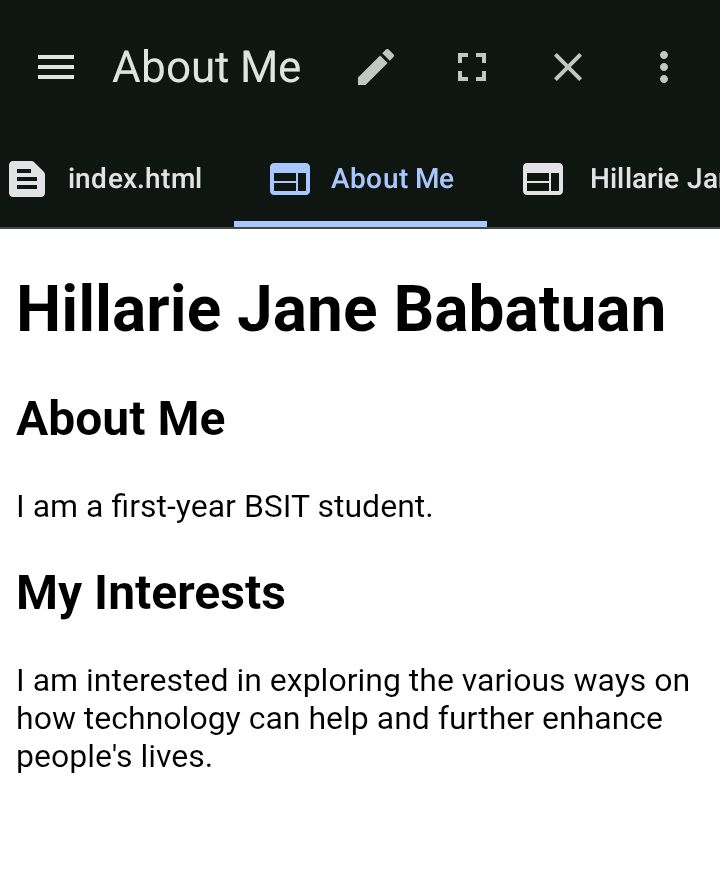
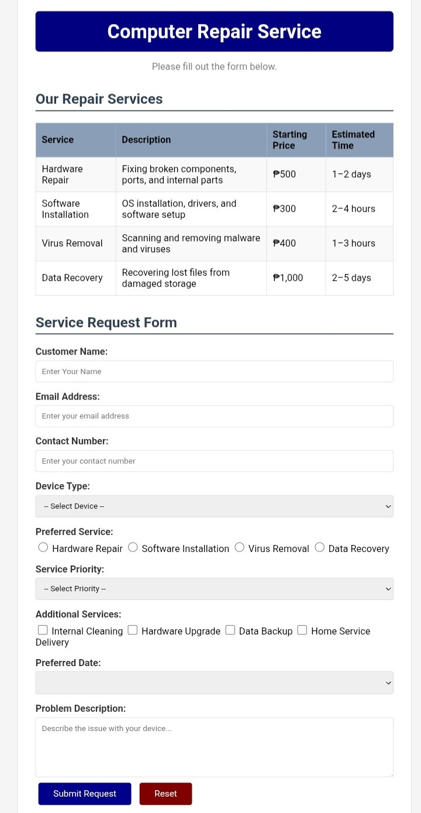
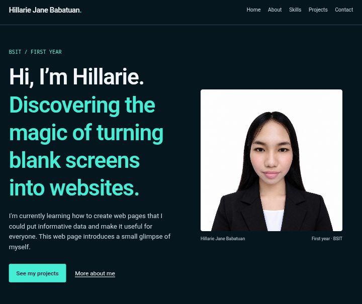

01 / PAGE STRUCTURE
HTML5
I've learned to use headings, tables, links, and insert images. It's a great thing to learn especially when I'm still a beginner.
BSIT / FIRST YEAR
I'm currently learning how to create web pages that I could put informative data and make it useful for everyone. This web page introduces a small glimpse of myself.
A LITTLE BACKGROUND
I'm Hillarie Jane Babatuan. A first year BSIT student major in Programming from Cordova Public College. The tech field has always fascinated me ever since, and it has been my dream to know the levers of it and making things work.
Although a beginner, I strive and try to push myself even if it seems like I have such a small progress. Sometimes it's frustrating, but inorder to finish things—I have to begin.
Aside from technology, I also love literature, arts, music, and traveling. It is my goal to learn tech while also keeping in touch of what makes us human.
This year, I want to build a strong foundation of my programming skills and create small webpages to practice. I want to build a pillar that helps me push through the following years of my academic life.
WHAT I’M LEARNING
01 / PAGE STRUCTURE
I've learned to use headings, tables, links, and insert images. It's a great thing to learn especially when I'm still a beginner.
02 / LAYOUT & SPACING
I've learned to customize and apply design using CSS to my HTML. There's many things that. could do such as changing background colors, fonts, adjusing margins and paddings, using flexbox, and many more.
03 / USEFUL UTILITIES
Can also be used to apply designs for my html. I can adjust features such as spacing, colors, and fonts too.
04 / THINKING IN STEPS
Currently learning C language, it's syntax, basic structure and algorithms, variables, flowcharts, loops, etc.
CLASSWORK & PRACTICE
My first three layouts that helped me learn the basics. The following images shows an illustrations of the mini projects that I made.

01 / HTML
A small introduction, my about, and interests. This is the first thing I've made using html.
View image preview →
02 / HTML & CSS
A table and form for Computer Repair Service Request Page. This is the first time that I have applied CSS for my HTML.
View image preview →
03 / HTMl & Tailwind
A simple and my first evern portfolio built from HTML and Tailwind. With deep blue background, white and teal texts.
View image preview →CONTACT
We could share our ideas, insights, notes, and collaborate. We can talk through email.
Reach me at
hillariejanebabatuan7@gmail.comCordova, Cebu, Philippines
Cordova Public College · BSIT
Usually checking messages after class.